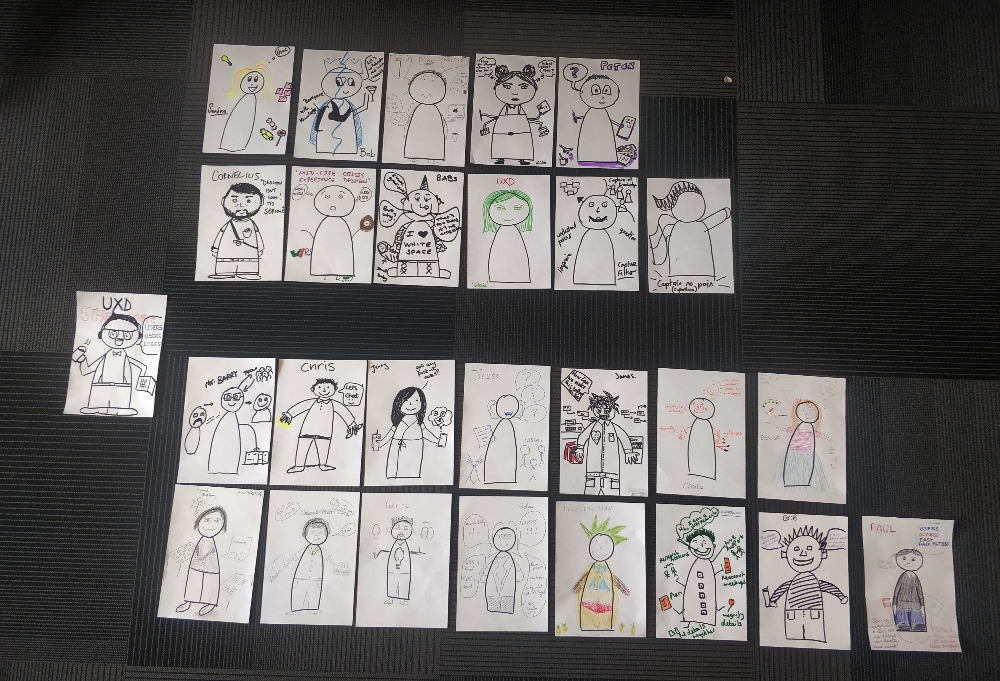
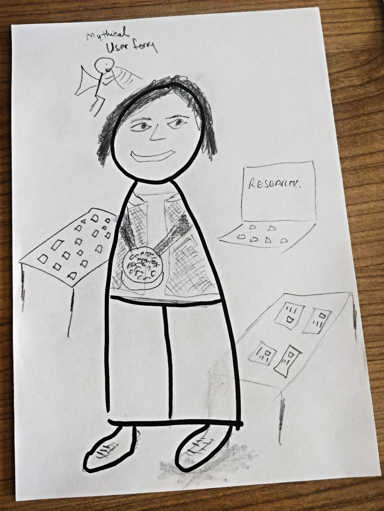

Breaking the UXD stereotypes
Originally published on NHSBSA Blog in 2020. The site is now offline.
The best way to get your message across is in terms your audience will understand; you need to accommodate their knowledge and interests. In the past I’ve explained my job as “drawing pretty pictures” (to a five-year-old), “unfound artist” (to friends), and “User Experience Designer, Graphic Designer or User interaction designer” to my colleagues.
But before I go deeper, I would like to ask you a few questions:
- How did you wake up this morning?
- Did you use an alarm clock, wake-up light or a smartphone?
- Have you ever had a GP appointment or picked up a prescription?
- How did you book the appointment?
- When you booked the appointment, did you call or find an opening online?
If you’ve used any of these objects or services, you are using something that has been part of the design process. It’s all about finding the right approach for your audience.
We need to work together, get people engaged in the process, and try to facilitate the transfer of information, including the benefits of wrapping the process around the user needs and experience. What works for one audience, may not be tangible for another. By having an open approach and flexible expectations, the goal becomes more concrete and available, and in doing so, feelings of exclusion can be avoided.
At the core of the design process, we have users, their needs, and how they handle and influence the process. As designers, we consider what the user needs are, how the new solution will function if the design solves the problem they are facing, and what will be the impact.
How?

They say a picture is worth a thousand words (especially if ALT text is used!), so we asked 11 UXDs to draw a persona for what they think our job is about. I asked them to try to break the stereotypes.
I also asked 15 non-UXDs to draw a UXD character using their thoughts and preconceptions about the role. These people included Business Analysts, Testers, Product Owners, Content Writers, Front-End and Back-End developers, and even members of staff who weren’t from the Technological or Digital industry as I wanted a wide range of views on UXD.
During the session I tried to answer the following questions, by asking the participants to break the stereotypes:
- What UXDs think we do?
- What others think we do?
- Who we are?
- What we do?
- How our skills can be used best?
Outcomes?
One of the non-UXD participants created a UXD character who fights bad user experience by turning people into pineapples because they are ignoring the user needs. This is just one example of the superheroes or fictional characters used in order to describe their understanding of the job title.
We also have Peter – the result of a UXD participant who has questions, not answers. Peter believes that pens and paper can be used as not everything has to be digital. He also loves the idea of iteration. He has big eyes to observe and always shares his observations.
Personal vs. Interpersonal Skills?
The UXD group focused on more cerebral and interpersonal skills, such as the thought processes, observation, listening, analysis, abilities to communicate effectively and positively with others, persuasion, positive attitude, and social awareness. On the other hand, the non-UXD group covered technical skills, such as drawing, creating tangible elements, programming, and creating prototypes.
I noticed misconceptions and some of the participants confuse the tasks of a UXD with other digital roles, such as User Researcher and Business Analyst.
We are planning to host more educational sessions and to transfer skills across the NHSBSA for separating the stereotypes from reality.

Conclusion
The exercise was successful in raising awareness and joining the two visions people have of UXDs, but there’s still misconceptions and stereotypes about UXD and other digital roles.
During the exercise I tried to emphasise that our role isn’t limited to drawing, creating diagrams, using post-it notes, having a MacBook, or drinking coffee from a fancy mug. These are just stereotypes!
It’s about being passionate, empathetic, solving problems and improving the customer experience. It’s about seeing the big picture and zooming in to the details. It is about giving the right information or paths so that the users will be able to make the right decision while making sure things are working properly for them.
It’s about asking ‘Why’ again and again to get to the bottom of problems. And it’s not just about delivering new features, but ensuring they are always adding value.
Moreover, this process tried to highlight that nobody is too small to make a difference. We need to explore and embrace the vision, in order to support our mission and transfer knowledge across the NHSBSA while working in a collaborative way.
Any new thing can be hard to accept at the beginning, but change requires perseverance and time!